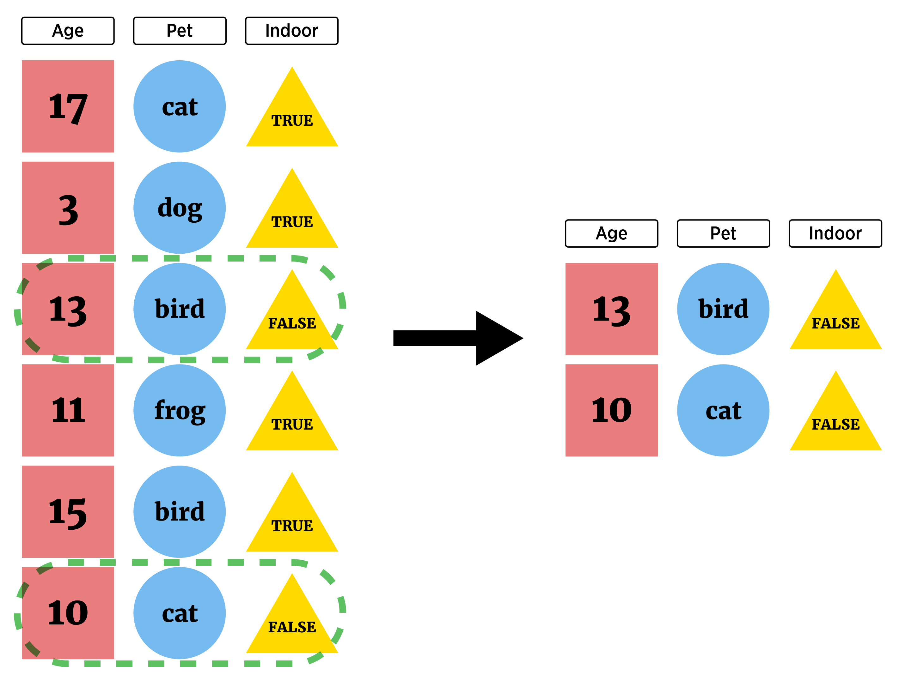
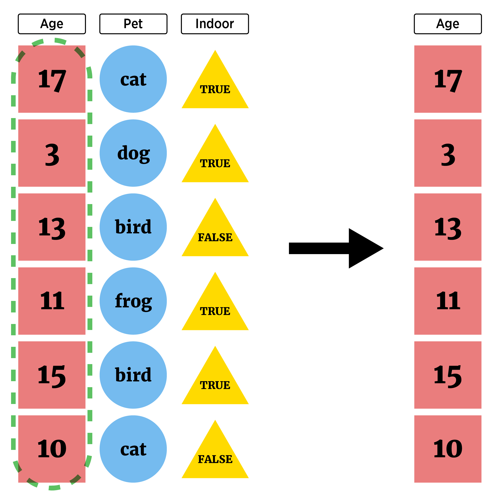

my_data |>
select(var1:var10, var20) |>
filter(var1 == "first") |>
mutate(new_var = lag(var20)) |>
...Manipulating Data with dplyr
Thinking about our big goals (doing data science):
- Read in raw data and manipulate it
- Combine data sources
- Summarize data to glean insights
- Apply common analysis methods
- Communicate Effectively
We now have a good idea about reading in certain types of data. Let’s take a bit of time going through common data manipulation tasks before returning to reading data in.
The two major tasks we’ll consider are
Row manipulations
- filtering or subsetting our observations
- arranging our observations in some order
Column manipulations
- selecting a subset of our variables
- rename a column
- mutating our data frame to create a new variable
We can use Base R for this (via [ or the subset() function). However, the tidyverse has a more coherent set of functions to allow us to do all of our tasks without having to spend as much time learning syntax. So let’s go that route!
Recall the basic fundamentals about the tidyverse:
(Almost) all functions take in
tibbles (special data frames) and outputtibbles(Almost) all functions have similar syntax!
function(tibble, arguments, ...)- Allows for easy chaining!
Coercing a Data Frame to a Tibble
If you happen to have a data frame that isn’t already a tibble, we can easily coerce it using the as_tibble() function.
Consider a data set on major league baseball players (batting statistics):
library(dplyr)
Attaching package: 'dplyr'The following objects are masked from 'package:stats':
filter, lagThe following objects are masked from 'package:base':
intersect, setdiff, setequal, unionlibrary(Lahman)Warning: package 'Lahman' was built under R version 4.4.2batting_tbl <- as_tibble(Batting)
batting_tbl# A tibble: 113,799 × 22
playerID yearID stint teamID lgID G AB R H X2B X3B HR
<chr> <int> <int> <fct> <fct> <int> <int> <int> <int> <int> <int> <int>
1 aardsda01 2004 1 SFN NL 11 0 0 0 0 0 0
2 aardsda01 2006 1 CHN NL 45 2 0 0 0 0 0
3 aardsda01 2007 1 CHA AL 25 0 0 0 0 0 0
4 aardsda01 2008 1 BOS AL 47 1 0 0 0 0 0
5 aardsda01 2009 1 SEA AL 73 0 0 0 0 0 0
6 aardsda01 2010 1 SEA AL 53 0 0 0 0 0 0
7 aardsda01 2012 1 NYA AL 1 0 0 0 0 0 0
8 aardsda01 2013 1 NYN NL 43 0 0 0 0 0 0
9 aardsda01 2015 1 ATL NL 33 1 0 0 0 0 0
10 aaronha01 1954 1 ML1 NL 122 468 58 131 27 6 13
# ℹ 113,789 more rows
# ℹ 10 more variables: RBI <int>, SB <int>, CS <int>, BB <int>, SO <int>,
# IBB <int>, HBP <int>, SH <int>, SF <int>, GIDP <int>Nice, now we can work on this tibble!
Row Manipulations with dplyr
A common task is to only grab certain types of observations (filter rows)

or rearrange the order of the observations (rows). The two functions from dplyr that help us here are
filter()- subset rowsarrange()- reorder rows
filter()
filter() generally takes a tibble as its first argument and then a logical vector as the next (of the same length as the number of rows):
- Returns observations where the number of games played is greater than 50 (the
Gcolumn):
filter(batting_tbl, G > 50)# A tibble: 41,727 × 22
playerID yearID stint teamID lgID G AB R H X2B X3B HR
<chr> <int> <int> <fct> <fct> <int> <int> <int> <int> <int> <int> <int>
1 aardsda01 2009 1 SEA AL 73 0 0 0 0 0 0
2 aardsda01 2010 1 SEA AL 53 0 0 0 0 0 0
3 aaronha01 1954 1 ML1 NL 122 468 58 131 27 6 13
4 aaronha01 1955 1 ML1 NL 153 602 105 189 37 9 27
5 aaronha01 1956 1 ML1 NL 153 609 106 200 34 14 26
6 aaronha01 1957 1 ML1 NL 151 615 118 198 27 6 44
7 aaronha01 1958 1 ML1 NL 153 601 109 196 34 4 30
8 aaronha01 1959 1 ML1 NL 154 629 116 223 46 7 39
9 aaronha01 1960 1 ML1 NL 153 590 102 172 20 11 40
10 aaronha01 1961 1 ML1 NL 155 603 115 197 39 10 34
# ℹ 41,717 more rows
# ℹ 10 more variables: RBI <int>, SB <int>, CS <int>, BB <int>, SO <int>,
# IBB <int>, HBP <int>, SH <int>, SF <int>, GIDP <int>Notice the number of observations is far less now!
- Of course, we’ll do many operations so let’s use chaining even in this simple case:
batting_tbl |>
filter(G > 50)# A tibble: 41,727 × 22
playerID yearID stint teamID lgID G AB R H X2B X3B HR
<chr> <int> <int> <fct> <fct> <int> <int> <int> <int> <int> <int> <int>
1 aardsda01 2009 1 SEA AL 73 0 0 0 0 0 0
2 aardsda01 2010 1 SEA AL 53 0 0 0 0 0 0
3 aaronha01 1954 1 ML1 NL 122 468 58 131 27 6 13
4 aaronha01 1955 1 ML1 NL 153 602 105 189 37 9 27
5 aaronha01 1956 1 ML1 NL 153 609 106 200 34 14 26
6 aaronha01 1957 1 ML1 NL 151 615 118 198 27 6 44
7 aaronha01 1958 1 ML1 NL 153 601 109 196 34 4 30
8 aaronha01 1959 1 ML1 NL 154 629 116 223 46 7 39
9 aaronha01 1960 1 ML1 NL 153 590 102 172 20 11 40
10 aaronha01 1961 1 ML1 NL 155 603 115 197 39 10 34
# ℹ 41,717 more rows
# ℹ 10 more variables: RBI <int>, SB <int>, CS <int>, BB <int>, SO <int>,
# IBB <int>, HBP <int>, SH <int>, SF <int>, GIDP <int>If we want to return observations where than one condition is
TRUEwe can either pass additional arguments or use the compound logical operator&we discussed earlier.- Condition on those that played more than 50 games and played in 2018
batting_tbl |>
filter(G > 50 & yearID == 2018)# A tibble: 518 × 22
playerID yearID stint teamID lgID G AB R H X2B X3B HR
<chr> <int> <int> <fct> <fct> <int> <int> <int> <int> <int> <int> <int>
1 abreujo02 2018 1 CHA AL 128 499 68 132 36 1 22
2 acunaro01 2018 1 ATL NL 111 433 78 127 26 4 26
3 adamewi01 2018 1 TBA AL 85 288 43 80 7 0 10
4 adamsma01 2018 1 WAS NL 94 249 37 64 9 0 18
5 adducji02 2018 1 DET AL 59 176 19 47 8 2 3
6 adriaeh01 2018 1 MIN AL 114 335 42 84 23 1 6
7 aguilje01 2018 1 MIL NL 149 492 80 135 25 0 35
8 ahmedni01 2018 1 ARI NL 153 516 61 121 33 5 16
9 albieoz01 2018 1 ATL NL 158 639 105 167 40 5 24
10 alexasc01 2018 1 LAN NL 73 5 0 0 0 0 0
# ℹ 508 more rows
# ℹ 10 more variables: RBI <int>, SB <int>, CS <int>, BB <int>, SO <int>,
# IBB <int>, HBP <int>, SH <int>, SF <int>, GIDP <int>#equivalently
batting_tbl |>
filter(G > 50, yearID == 2018)# A tibble: 518 × 22
playerID yearID stint teamID lgID G AB R H X2B X3B HR
<chr> <int> <int> <fct> <fct> <int> <int> <int> <int> <int> <int> <int>
1 abreujo02 2018 1 CHA AL 128 499 68 132 36 1 22
2 acunaro01 2018 1 ATL NL 111 433 78 127 26 4 26
3 adamewi01 2018 1 TBA AL 85 288 43 80 7 0 10
4 adamsma01 2018 1 WAS NL 94 249 37 64 9 0 18
5 adducji02 2018 1 DET AL 59 176 19 47 8 2 3
6 adriaeh01 2018 1 MIN AL 114 335 42 84 23 1 6
7 aguilje01 2018 1 MIL NL 149 492 80 135 25 0 35
8 ahmedni01 2018 1 ARI NL 153 516 61 121 33 5 16
9 albieoz01 2018 1 ATL NL 158 639 105 167 40 5 24
10 alexasc01 2018 1 LAN NL 73 5 0 0 0 0 0
# ℹ 508 more rows
# ℹ 10 more variables: RBI <int>, SB <int>, CS <int>, BB <int>, SO <int>,
# IBB <int>, HBP <int>, SH <int>, SF <int>, GIDP <int>- Often we want to check if a variable is in a specific group of values. We might think this is the way:
####wrong!!!!! Common mistake
batting_tbl |>
filter(G > 50, yearID == c(2018, 2019, 2020))# A tibble: 387 × 22
playerID yearID stint teamID lgID G AB R H X2B X3B HR
<chr> <int> <int> <fct> <fct> <int> <int> <int> <int> <int> <int> <int>
1 adamsma01 2018 1 WAS NL 94 249 37 64 9 0 18
2 alberma01 2019 1 MIL NL 67 0 0 0 0 0 0
3 albieoz01 2018 1 ATL NL 158 639 105 167 40 5 24
4 albieoz01 2019 1 ATL NL 160 640 102 189 43 8 24
5 alfarjo01 2018 1 PHI NL 108 344 35 90 16 2 10
6 alfarjo01 2019 1 MIA NL 130 431 44 113 14 1 18
7 allengr01 2018 1 CLE AL 91 265 36 68 11 3 2
8 allengr01 2019 1 CLE AL 89 231 30 53 9 3 4
9 almoral01 2018 1 CHN NL 152 444 62 127 24 1 5
10 almoral01 2019 1 CHN NL 130 339 41 80 11 1 12
# ℹ 377 more rows
# ℹ 10 more variables: RBI <int>, SB <int>, CS <int>, BB <int>, SO <int>,
# IBB <int>, HBP <int>, SH <int>, SF <int>, GIDP <int>- Here, R uses recycling on the vector and actually compares the 1st element to 2018, the 2nd to 2019, the third to 2020, the fourth to 2018, the fifth to 2019, …
- Use
%in%to choose any observations matching an element of a vector
batting_tbl |>
filter(G > 50, yearID %in% c(2018, 2019, 2020))# A tibble: 1,172 × 22
playerID yearID stint teamID lgID G AB R H X2B X3B HR
<chr> <int> <int> <fct> <fct> <int> <int> <int> <int> <int> <int> <int>
1 abreujo02 2018 1 CHA AL 128 499 68 132 36 1 22
2 abreujo02 2019 1 CHA AL 159 634 85 180 38 1 33
3 abreujo02 2020 1 CHA AL 60 240 43 76 15 0 19
4 acunaro01 2018 1 ATL NL 111 433 78 127 26 4 26
5 acunaro01 2019 1 ATL NL 156 626 127 175 22 2 41
6 adamewi01 2018 1 TBA AL 85 288 43 80 7 0 10
7 adamewi01 2019 1 TBA AL 152 531 69 135 25 1 20
8 adamewi01 2020 1 TBA AL 54 185 29 48 15 1 8
9 adamsma01 2018 1 WAS NL 94 249 37 64 9 0 18
10 adamsma01 2019 1 WAS NL 111 310 42 70 14 0 20
# ℹ 1,162 more rows
# ℹ 10 more variables: RBI <int>, SB <int>, CS <int>, BB <int>, SO <int>,
# IBB <int>, HBP <int>, SH <int>, SF <int>, GIDP <int>If we want an or condition, we use the compound logical operator for that
- Here, grab those with either games greater than 100 or those that played in 2018, 2019, or 2020 (or both)
batting_tbl |>
filter(G > 100 | yearID %in% c(2018, 2019, 2020))# A tibble: 25,417 × 22
playerID yearID stint teamID lgID G AB R H X2B X3B HR
<chr> <int> <int> <fct> <fct> <int> <int> <int> <int> <int> <int> <int>
1 aaronha01 1954 1 ML1 NL 122 468 58 131 27 6 13
2 aaronha01 1955 1 ML1 NL 153 602 105 189 37 9 27
3 aaronha01 1956 1 ML1 NL 153 609 106 200 34 14 26
4 aaronha01 1957 1 ML1 NL 151 615 118 198 27 6 44
5 aaronha01 1958 1 ML1 NL 153 601 109 196 34 4 30
6 aaronha01 1959 1 ML1 NL 154 629 116 223 46 7 39
7 aaronha01 1960 1 ML1 NL 153 590 102 172 20 11 40
8 aaronha01 1961 1 ML1 NL 155 603 115 197 39 10 34
9 aaronha01 1962 1 ML1 NL 156 592 127 191 28 6 45
10 aaronha01 1963 1 ML1 NL 161 631 121 201 29 4 44
# ℹ 25,407 more rows
# ℹ 10 more variables: RBI <int>, SB <int>, CS <int>, BB <int>, SO <int>,
# IBB <int>, HBP <int>, SH <int>, SF <int>, GIDP <int>- Again, note the change in the observation count!
arrange()
The other major observation (row) manipulation is to reorder the observations (rows). This is done through arrange() from dplyr (or sort() in Base R)
- Let’s take our result from above and reorder by
teamID
batting_tbl |>
filter(G > 100, yearID %in% c(2018, 2019, 2020)) |>
arrange(teamID)# A tibble: 467 × 22
playerID yearID stint teamID lgID G AB R H X2B X3B HR
<chr> <int> <int> <fct> <fct> <int> <int> <int> <int> <int> <int> <int>
1 ahmedni01 2018 1 ARI NL 153 516 61 121 33 5 16
2 ahmedni01 2019 1 ARI NL 158 556 79 141 33 6 19
3 descada01 2018 1 ARI NL 138 349 54 83 22 4 13
4 dysonja01 2019 1 ARI NL 130 400 65 92 11 2 7
5 escobed01 2019 1 ARI NL 158 636 94 171 29 10 35
6 goldspa01 2018 1 ARI NL 158 593 95 172 35 5 33
7 jonesad01 2019 1 ARI NL 137 485 66 126 25 1 16
8 kellyca02 2019 1 ARI NL 111 314 46 77 19 0 18
9 marteke01 2018 1 ARI NL 153 520 68 135 26 12 14
10 marteke01 2019 1 ARI NL 144 569 97 187 36 9 32
# ℹ 457 more rows
# ℹ 10 more variables: RBI <int>, SB <int>, CS <int>, BB <int>, SO <int>,
# IBB <int>, HBP <int>, SH <int>, SF <int>, GIDP <int>Remember to read the pipe (
|>) as ‘then’. Here we would say:Take the batting tibble and then
filter the rows to only include those with games greater than 100 and those that played in 2018-2020 and then
arrange the rows by the team name
We can obtain a secondary arrangement by giving a second column
batting_tbl |>
filter(G > 100, yearID %in% c(2018, 2019, 2020)) |>
arrange(teamID, playerID)# A tibble: 467 × 22
playerID yearID stint teamID lgID G AB R H X2B X3B HR
<chr> <int> <int> <fct> <fct> <int> <int> <int> <int> <int> <int> <int>
1 ahmedni01 2018 1 ARI NL 153 516 61 121 33 5 16
2 ahmedni01 2019 1 ARI NL 158 556 79 141 33 6 19
3 descada01 2018 1 ARI NL 138 349 54 83 22 4 13
4 dysonja01 2019 1 ARI NL 130 400 65 92 11 2 7
5 escobed01 2019 1 ARI NL 158 636 94 171 29 10 35
6 goldspa01 2018 1 ARI NL 158 593 95 172 35 5 33
7 jonesad01 2019 1 ARI NL 137 485 66 126 25 1 16
8 kellyca02 2019 1 ARI NL 111 314 46 77 19 0 18
9 marteke01 2018 1 ARI NL 153 520 68 135 26 12 14
10 marteke01 2019 1 ARI NL 144 569 97 187 36 9 32
# ℹ 457 more rows
# ℹ 10 more variables: RBI <int>, SB <int>, CS <int>, BB <int>, SO <int>,
# IBB <int>, HBP <int>, SH <int>, SF <int>, GIDP <int>- We can reorder descending on a variable
batting_tbl |>
filter(G > 100, yearID %in% c(2018, 2019, 2020)) |>
arrange(desc(teamID), playerID)# A tibble: 467 × 22
playerID yearID stint teamID lgID G AB R H X2B X3B HR
<chr> <int> <int> <fct> <fct> <int> <int> <int> <int> <int> <int> <int>
1 adamsma01 2019 1 WAS NL 111 310 42 70 14 0 20
2 difowi01 2018 1 WAS NL 148 408 55 94 14 7 7
3 doziebr01 2019 1 WAS NL 135 416 54 99 20 0 20
4 eatonad02 2019 1 WAS NL 151 566 103 158 25 7 15
5 harpebr03 2018 1 WAS NL 159 550 103 137 34 0 34
6 kendrho01 2019 1 WAS NL 121 334 61 115 23 1 17
7 rendoan01 2018 1 WAS NL 136 529 88 163 44 2 24
8 rendoan01 2019 1 WAS NL 146 545 117 174 44 3 34
9 roblevi01 2019 1 WAS NL 155 546 86 139 33 3 17
10 sotoju01 2018 1 WAS NL 116 414 77 121 25 1 22
# ℹ 457 more rows
# ℹ 10 more variables: RBI <int>, SB <int>, CS <int>, BB <int>, SO <int>,
# IBB <int>, HBP <int>, SH <int>, SF <int>, GIDP <int>Column Manipulations with dplyr
We may want to subset our variables, rename them, or create new variables.
select() - Subset Columns
We call the subset of our variables selecting columns (or variables)

To return a single (probably simplified) column we looked at the following methods (one of which is in the
tidyverse):dplyr::pull()$[ , ]
When we want to look at pulling more than one column, select() is much better!
Suppose we just wanted to look at the
playerID,teamID, and hits type variables:H,X2BX3B, andHRof the players in our subsetWe can add in a
select()function to our chain (thanks again coherent ecosystem!).- One way is to simply list the columns you want:
batting_tbl |>
filter(G > 100, yearID %in% c(2018, 2019, 2020)) |>
arrange(desc(teamID), playerID) |>
select(playerID, teamID, H, X2B, X3B, HR)# A tibble: 467 × 6
playerID teamID H X2B X3B HR
<chr> <fct> <int> <int> <int> <int>
1 adamsma01 WAS 70 14 0 20
2 difowi01 WAS 94 14 7 7
3 doziebr01 WAS 99 20 0 20
4 eatonad02 WAS 158 25 7 15
5 harpebr03 WAS 137 34 0 34
6 kendrho01 WAS 115 23 1 17
7 rendoan01 WAS 163 44 2 24
8 rendoan01 WAS 174 44 3 34
9 roblevi01 WAS 139 33 3 17
10 sotoju01 WAS 121 25 1 22
# ℹ 457 more rowsWhere we really gain here is the ability to use helper functions when selecting columns!
:to select all contiguous columns
batting_tbl |>
filter(G > 100, yearID %in% c(2018, 2019, 2020)) |>
arrange(desc(teamID), playerID) |>
select(playerID, teamID, H:HR)# A tibble: 467 × 6
playerID teamID H X2B X3B HR
<chr> <fct> <int> <int> <int> <int>
1 adamsma01 WAS 70 14 0 20
2 difowi01 WAS 94 14 7 7
3 doziebr01 WAS 99 20 0 20
4 eatonad02 WAS 158 25 7 15
5 harpebr03 WAS 137 34 0 34
6 kendrho01 WAS 115 23 1 17
7 rendoan01 WAS 163 44 2 24
8 rendoan01 WAS 174 44 3 34
9 roblevi01 WAS 139 33 3 17
10 sotoju01 WAS 121 25 1 22
# ℹ 457 more rowsstarts_with()andends_with()are also really useful
batting_tbl |>
filter(G > 100, yearID %in% c(2018, 2019, 2020)) |>
arrange(desc(teamID), playerID) |>
select(ends_with("ID"), G, AB, H:HR)# A tibble: 467 × 10
playerID yearID teamID lgID G AB H X2B X3B HR
<chr> <int> <fct> <fct> <int> <int> <int> <int> <int> <int>
1 adamsma01 2019 WAS NL 111 310 70 14 0 20
2 difowi01 2018 WAS NL 148 408 94 14 7 7
3 doziebr01 2019 WAS NL 135 416 99 20 0 20
4 eatonad02 2019 WAS NL 151 566 158 25 7 15
5 harpebr03 2018 WAS NL 159 550 137 34 0 34
6 kendrho01 2019 WAS NL 121 334 115 23 1 17
7 rendoan01 2018 WAS NL 136 529 163 44 2 24
8 rendoan01 2019 WAS NL 146 545 174 44 3 34
9 roblevi01 2019 WAS NL 155 546 139 33 3 17
10 sotoju01 2018 WAS NL 116 414 121 25 1 22
# ℹ 457 more rows- We can combine those two as well using
&and|operators
batting_tbl |>
filter(G > 100, yearID %in% c(2018, 2019, 2020)) |>
arrange(desc(teamID), playerID) |>
select(ends_with("ID") | starts_with("X"), G, AB, H, HR)# A tibble: 467 × 10
playerID yearID teamID lgID X2B X3B G AB H HR
<chr> <int> <fct> <fct> <int> <int> <int> <int> <int> <int>
1 adamsma01 2019 WAS NL 14 0 111 310 70 20
2 difowi01 2018 WAS NL 14 7 148 408 94 7
3 doziebr01 2019 WAS NL 20 0 135 416 99 20
4 eatonad02 2019 WAS NL 25 7 151 566 158 15
5 harpebr03 2018 WAS NL 34 0 159 550 137 34
6 kendrho01 2019 WAS NL 23 1 121 334 115 17
7 rendoan01 2018 WAS NL 44 2 136 529 163 24
8 rendoan01 2019 WAS NL 44 3 146 545 174 34
9 roblevi01 2019 WAS NL 33 3 155 546 139 17
10 sotoju01 2018 WAS NL 25 1 116 414 121 22
# ℹ 457 more rows- If our goal is really just to reorder the columns, we can use
everything()after specifying the columns of interest
batting_tbl |>
filter(G > 100, yearID %in% c(2018, 2019, 2020)) |>
arrange(desc(teamID), playerID) |>
select(playerID, H:HR, everything())# A tibble: 467 × 22
playerID H X2B X3B HR yearID stint teamID lgID G AB R
<chr> <int> <int> <int> <int> <int> <int> <fct> <fct> <int> <int> <int>
1 adamsma01 70 14 0 20 2019 1 WAS NL 111 310 42
2 difowi01 94 14 7 7 2018 1 WAS NL 148 408 55
3 doziebr01 99 20 0 20 2019 1 WAS NL 135 416 54
4 eatonad02 158 25 7 15 2019 1 WAS NL 151 566 103
5 harpebr03 137 34 0 34 2018 1 WAS NL 159 550 103
6 kendrho01 115 23 1 17 2019 1 WAS NL 121 334 61
7 rendoan01 163 44 2 24 2018 1 WAS NL 136 529 88
8 rendoan01 174 44 3 34 2019 1 WAS NL 146 545 117
9 roblevi01 139 33 3 17 2019 1 WAS NL 155 546 86
10 sotoju01 121 25 1 22 2018 1 WAS NL 116 414 77
# ℹ 457 more rows
# ℹ 10 more variables: RBI <int>, SB <int>, CS <int>, BB <int>, SO <int>,
# IBB <int>, HBP <int>, SH <int>, SF <int>, GIDP <int>- See the help for
select()for more information about selection features (these can usually be used in anytidyversefunctions where you are selecting columns!)
rename()
We’ve seen the use of colnames() or names() to rename columns. Those are great but aren’t easy to chain. rename() comes in handy in this case!
batting_tbl |>
filter(G > 100, yearID %in% c(2018, 2019, 2020)) |>
arrange(desc(teamID), playerID) |>
select(playerID, teamID, H:HR) |>
rename("Doubles" = "X2B", "Triples" = "X3B")# A tibble: 467 × 6
playerID teamID H Doubles Triples HR
<chr> <fct> <int> <int> <int> <int>
1 adamsma01 WAS 70 14 0 20
2 difowi01 WAS 94 14 7 7
3 doziebr01 WAS 99 20 0 20
4 eatonad02 WAS 158 25 7 15
5 harpebr03 WAS 137 34 0 34
6 kendrho01 WAS 115 23 1 17
7 rendoan01 WAS 163 44 2 24
8 rendoan01 WAS 174 44 3 34
9 roblevi01 WAS 139 33 3 17
10 sotoju01 WAS 121 25 1 22
# ℹ 457 more rowsCreating New Variables with dplyr
Often we want to create new variables!

This can be accomplished using mutate(). This function allows us to create one or more variables and append them to our tibble.
- For our dataset from above, suppose we wanted to create an “extra base hits” type column that is the sum of the doubles, triples, and home runs.
batting_tbl |>
filter(G > 100, yearID %in% c(2018, 2019, 2020)) |>
arrange(desc(teamID), playerID) |>
select(playerID, teamID, H:HR) |>
rename("Doubles" = "X2B", "Triples" = "X3B") |>
mutate(Extra_Base_Hits = Doubles + Triples + HR)# A tibble: 467 × 7
playerID teamID H Doubles Triples HR Extra_Base_Hits
<chr> <fct> <int> <int> <int> <int> <int>
1 adamsma01 WAS 70 14 0 20 34
2 difowi01 WAS 94 14 7 7 28
3 doziebr01 WAS 99 20 0 20 40
4 eatonad02 WAS 158 25 7 15 47
5 harpebr03 WAS 137 34 0 34 68
6 kendrho01 WAS 115 23 1 17 41
7 rendoan01 WAS 163 44 2 24 70
8 rendoan01 WAS 174 44 3 34 81
9 roblevi01 WAS 139 33 3 17 53
10 sotoju01 WAS 121 25 1 22 48
# ℹ 457 more rowsIf we want to add more than one variable, we just separate the variable definitions with a comma.
- Let’s add a
Singlesvariable representing the number of hits minus the number of extra base hits
- Let’s add a
batting_tbl |>
filter(G > 100, yearID %in% c(2018, 2019, 2020)) |>
arrange(desc(teamID), playerID) |>
select(playerID, teamID, H:HR) |>
rename("Doubles" = "X2B", "Triples" = "X3B") |>
mutate(Extra_Base_Hits = Doubles + Triples + HR,
Singles = H - Extra_Base_Hits) |>
select(playerID, teamID, Singles, Doubles:HR, H, Extra_Base_Hits)# A tibble: 467 × 8
playerID teamID Singles Doubles Triples HR H Extra_Base_Hits
<chr> <fct> <int> <int> <int> <int> <int> <int>
1 adamsma01 WAS 36 14 0 20 70 34
2 difowi01 WAS 66 14 7 7 94 28
3 doziebr01 WAS 59 20 0 20 99 40
4 eatonad02 WAS 111 25 7 15 158 47
5 harpebr03 WAS 69 34 0 34 137 68
6 kendrho01 WAS 74 23 1 17 115 41
7 rendoan01 WAS 93 44 2 24 163 70
8 rendoan01 WAS 93 44 3 34 174 81
9 roblevi01 WAS 86 33 3 17 139 53
10 sotoju01 WAS 73 25 1 22 121 48
# ℹ 457 more rowsWe can of course use lots of functions when creating a new variable as well. Some common functions are
log(),lead(),lag(),percent_rank(),cumsum(), etc. (see the help formutatefor a nice list).- Let’s use
percent_rank()to get a new column telling us where they rank for number of hits
- Let’s use
batting_tbl |>
filter(G > 100, yearID %in% c(2018, 2019, 2020)) |>
arrange(desc(teamID), playerID) |>
select(playerID, teamID, H:HR) |>
rename("Doubles" = "X2B", "Triples" = "X3B") |>
mutate(Extra_Base_Hits = Doubles + Triples + HR,
Singles = H - Extra_Base_Hits,
H_Percentile = percent_rank(H)) |>
select(playerID, teamID, H, H_Percentile, everything()) # A tibble: 467 × 9
playerID teamID H H_Percentile Doubles Triples HR Extra_Base_Hits
<chr> <fct> <int> <dbl> <int> <int> <int> <int>
1 adamsma01 WAS 70 0.0536 14 0 20 34
2 difowi01 WAS 94 0.223 14 7 7 28
3 doziebr01 WAS 99 0.266 20 0 20 40
4 eatonad02 WAS 158 0.830 25 7 15 47
5 harpebr03 WAS 137 0.665 34 0 34 68
6 kendrho01 WAS 115 0.436 23 1 17 41
7 rendoan01 WAS 163 0.865 44 2 24 70
8 rendoan01 WAS 174 0.923 44 3 34 81
9 roblevi01 WAS 139 0.687 33 3 17 53
10 sotoju01 WAS 121 0.517 25 1 22 48
# ℹ 457 more rows
# ℹ 1 more variable: Singles <int>- A common comparison we want to do is to take a particular value and compare it to its mean. Let’s add in a mean variable for hits as well.
batting_tbl |>
filter(G > 100, yearID %in% c(2018, 2019, 2020)) |>
arrange(desc(teamID), playerID) |>
select(playerID, teamID, H:HR) |>
rename("Doubles" = "X2B", "Triples" = "X3B") |>
mutate(Extra_Base_Hits = Doubles + Triples + HR,
Singles = H - Extra_Base_Hits,
H_Percentile = percent_rank(H),
H_Mean = mean(H)) |>
select(playerID, teamID, H, H_Mean, H_Percentile, everything()) # A tibble: 467 × 10
playerID teamID H H_Mean H_Percentile Doubles Triples HR
<chr> <fct> <int> <dbl> <dbl> <int> <int> <int>
1 adamsma01 WAS 70 121. 0.0536 14 0 20
2 difowi01 WAS 94 121. 0.223 14 7 7
3 doziebr01 WAS 99 121. 0.266 20 0 20
4 eatonad02 WAS 158 121. 0.830 25 7 15
5 harpebr03 WAS 137 121. 0.665 34 0 34
6 kendrho01 WAS 115 121. 0.436 23 1 17
7 rendoan01 WAS 163 121. 0.865 44 2 24
8 rendoan01 WAS 174 121. 0.923 44 3 34
9 roblevi01 WAS 139 121. 0.687 33 3 17
10 sotoju01 WAS 121 121. 0.517 25 1 22
# ℹ 457 more rows
# ℹ 2 more variables: Extra_Base_Hits <int>, Singles <int>Useful, but what if we want to show the mean by team? Easy to do in
dplyrusinggroup_by()!If we add
group_by()in our chain, any summary statistics created will honor those groups (ungroup()exists if you want to remove a grouping).
batting_tbl |>
filter(G > 100, yearID %in% c(2018, 2019, 2020)) |>
arrange(desc(teamID), playerID) |>
select(playerID, teamID, H:HR) |>
rename("Doubles" = "X2B", "Triples" = "X3B") |>
group_by(teamID)# A tibble: 467 × 6
# Groups: teamID [30]
playerID teamID H Doubles Triples HR
<chr> <fct> <int> <int> <int> <int>
1 adamsma01 WAS 70 14 0 20
2 difowi01 WAS 94 14 7 7
3 doziebr01 WAS 99 20 0 20
4 eatonad02 WAS 158 25 7 15
5 harpebr03 WAS 137 34 0 34
6 kendrho01 WAS 115 23 1 17
7 rendoan01 WAS 163 44 2 24
8 rendoan01 WAS 174 44 3 34
9 roblevi01 WAS 139 33 3 17
10 sotoju01 WAS 121 25 1 22
# ℹ 457 more rows- Notice there is now an additional attribute associated with this
tibble!
batting_tbl |>
filter(G > 100, yearID %in% c(2018, 2019, 2020)) |>
arrange(desc(teamID), playerID) |>
select(playerID, teamID, H:HR) |>
rename("Doubles" = "X2B", "Triples" = "X3B") |>
group_by(teamID) |>
attributes()$class
[1] "grouped_df" "tbl_df" "tbl" "data.frame"
$row.names
[1] 1 2 3 4 5 6 7 8 9 10 11 12 13 14 15 16 17 18
[19] 19 20 21 22 23 24 25 26 27 28 29 30 31 32 33 34 35 36
[37] 37 38 39 40 41 42 43 44 45 46 47 48 49 50 51 52 53 54
[55] 55 56 57 58 59 60 61 62 63 64 65 66 67 68 69 70 71 72
[73] 73 74 75 76 77 78 79 80 81 82 83 84 85 86 87 88 89 90
[91] 91 92 93 94 95 96 97 98 99 100 101 102 103 104 105 106 107 108
[109] 109 110 111 112 113 114 115 116 117 118 119 120 121 122 123 124 125 126
[127] 127 128 129 130 131 132 133 134 135 136 137 138 139 140 141 142 143 144
[145] 145 146 147 148 149 150 151 152 153 154 155 156 157 158 159 160 161 162
[163] 163 164 165 166 167 168 169 170 171 172 173 174 175 176 177 178 179 180
[181] 181 182 183 184 185 186 187 188 189 190 191 192 193 194 195 196 197 198
[199] 199 200 201 202 203 204 205 206 207 208 209 210 211 212 213 214 215 216
[217] 217 218 219 220 221 222 223 224 225 226 227 228 229 230 231 232 233 234
[235] 235 236 237 238 239 240 241 242 243 244 245 246 247 248 249 250 251 252
[253] 253 254 255 256 257 258 259 260 261 262 263 264 265 266 267 268 269 270
[271] 271 272 273 274 275 276 277 278 279 280 281 282 283 284 285 286 287 288
[289] 289 290 291 292 293 294 295 296 297 298 299 300 301 302 303 304 305 306
[307] 307 308 309 310 311 312 313 314 315 316 317 318 319 320 321 322 323 324
[325] 325 326 327 328 329 330 331 332 333 334 335 336 337 338 339 340 341 342
[343] 343 344 345 346 347 348 349 350 351 352 353 354 355 356 357 358 359 360
[361] 361 362 363 364 365 366 367 368 369 370 371 372 373 374 375 376 377 378
[379] 379 380 381 382 383 384 385 386 387 388 389 390 391 392 393 394 395 396
[397] 397 398 399 400 401 402 403 404 405 406 407 408 409 410 411 412 413 414
[415] 415 416 417 418 419 420 421 422 423 424 425 426 427 428 429 430 431 432
[433] 433 434 435 436 437 438 439 440 441 442 443 444 445 446 447 448 449 450
[451] 451 452 453 454 455 456 457 458 459 460 461 462 463 464 465 466 467
$names
[1] "playerID" "teamID" "H" "Doubles" "Triples" "HR"
$groups
# A tibble: 30 × 2
teamID .rows
<fct> <list<int>>
1 ARI [14]
2 ATL [17]
3 BAL [12]
4 BOS [16]
5 CHA [14]
6 CHN [19]
7 CIN [17]
8 CLE [16]
9 COL [17]
10 DET [11]
# ℹ 20 more rows- Let’s find our mean relative to each team using a
group_by()in our chain (this finds the percentile byteamIDas well).
batting_tbl |>
filter(G > 100, yearID %in% c(2018, 2019, 2020)) |>
arrange(desc(teamID), playerID) |>
select(playerID, teamID, H:HR) |>
rename("Doubles" = "X2B", "Triples" = "X3B") |>
group_by(teamID) |>
mutate(Extra_Base_Hits = Doubles + Triples + HR,
Singles = H - Extra_Base_Hits,
H_Percentile = percent_rank(H),
H_Mean = mean(H)) |>
select(playerID, teamID, H, H_Mean, H_Percentile, everything()) |>
print(n = 50)# A tibble: 467 × 10
# Groups: teamID [30]
playerID teamID H H_Mean H_Percentile Doubles Triples HR
<chr> <fct> <int> <dbl> <dbl> <int> <int> <int>
1 adamsma01 WAS 70 131. 0 14 0 20
2 difowi01 WAS 94 131. 0.154 14 7 7
3 doziebr01 WAS 99 131. 0.231 20 0 20
4 eatonad02 WAS 158 131. 0.769 25 7 15
5 harpebr03 WAS 137 131. 0.462 34 0 34
6 kendrho01 WAS 115 131. 0.308 23 1 17
7 rendoan01 WAS 163 131. 0.846 44 2 24
8 rendoan01 WAS 174 131. 0.923 44 3 34
9 roblevi01 WAS 139 131. 0.538 33 3 17
10 sotoju01 WAS 121 131. 0.385 25 1 22
11 sotoju01 WAS 153 131. 0.615 32 5 34
12 taylomi02 WAS 80 131. 0.0769 22 3 6
13 turnetr01 WAS 180 131. 1 27 6 19
14 turnetr01 WAS 155 131. 0.692 37 5 19
15 diazal02 TOR 111 103. 0.625 26 0 18
16 drurybr01 TOR 91 103. 0.312 21 1 15
17 galvifr01 TOR 120 103. 0.75 24 1 18
18 grandcu01 TOR 74 103. 0.0625 21 1 11
19 grichra01 TOR 104 103. 0.5 32 1 25
20 grichra01 TOR 136 103. 1 29 5 31
21 guerrvl02 TOR 126 103. 0.875 26 2 15
22 hernate01 TOR 114 103. 0.688 29 7 22
23 hernate01 TOR 96 103. 0.375 19 2 26
24 janseda01 TOR 72 103. 0 12 1 13
25 moralke01 TOR 103 103. 0.438 15 0 21
26 pillake01 TOR 129 103. 0.938 40 2 15
27 smoakju01 TOR 122 103. 0.812 34 0 25
28 smoakju01 TOR 86 103. 0.25 16 0 22
29 solarya01 TOR 106 103. 0.562 20 0 17
30 tellero01 TOR 84 103. 0.188 19 0 21
31 travide01 TOR 83 103. 0.125 14 3 11
32 andruel01 TEX 165 113. 1 27 4 12
33 beltrad01 TEX 118 113. 0.562 23 1 15
34 chiriro01 TEX 80 113. 0.125 15 1 18
35 choosh01 TEX 148 113. 0.875 30 1 21
36 choosh01 TEX 149 113. 0.938 31 2 24
37 deshide02 TEX 72 113. 0 14 1 2
38 deshide02 TEX 89 113. 0.188 15 4 4
39 forsylo01 TEX 72 113. 0 17 1 7
40 gallojo01 TEX 103 113. 0.375 24 1 40
41 guzmaro01 TEX 91 113. 0.25 18 2 16
42 kineris01 TEX 93 113. 0.312 18 2 4
43 mazarno01 TEX 126 113. 0.688 25 1 20
44 mazarno01 TEX 115 113. 0.5 27 1 19
45 odorro01 TEX 120 113. 0.625 23 2 18
46 odorro01 TEX 107 113. 0.438 30 1 30
47 profaju01 TEX 133 113. 0.75 35 6 20
48 santada01 TEX 134 113. 0.812 23 6 28
49 adamewi01 TBA 135 130. 0.4 25 1 20
50 choiji01 TBA 107 130. 0.2 20 2 19
# ℹ 417 more rows
# ℹ 2 more variables: Extra_Base_Hits <int>, Singles <int>- We can get a secondary grouping too! Let’s group by year as well
batting_tbl |>
filter(G > 100, yearID %in% c(2018, 2019, 2020)) |>
arrange(desc(teamID), playerID) |>
select(playerID, yearID, teamID, H:HR) |>
rename("Doubles" = "X2B", "Triples" = "X3B") |>
group_by(teamID, yearID) |>
mutate(Extra_Base_Hits = Doubles + Triples + HR,
Singles = H - Extra_Base_Hits,
H_Percentile = percent_rank(H),
H_Mean = mean(H)) |>
select(playerID, teamID, yearID, H, H_Mean, H_Percentile, everything())# A tibble: 467 × 11
# Groups: teamID, yearID [60]
playerID teamID yearID H H_Mean H_Percentile Doubles Triples HR
<chr> <fct> <int> <int> <dbl> <dbl> <int> <int> <int>
1 adamsma01 WAS 2019 70 133. 0 14 0 20
2 difowi01 WAS 2018 94 129. 0.2 14 7 7
3 doziebr01 WAS 2019 99 133. 0.143 20 0 20
4 eatonad02 WAS 2019 158 133. 0.857 25 7 15
5 harpebr03 WAS 2018 137 129. 0.6 34 0 34
6 kendrho01 WAS 2019 115 133. 0.286 23 1 17
7 rendoan01 WAS 2018 163 129. 0.8 44 2 24
8 rendoan01 WAS 2019 174 133. 1 44 3 34
9 roblevi01 WAS 2019 139 133. 0.429 33 3 17
10 sotoju01 WAS 2018 121 129. 0.4 25 1 22
# ℹ 457 more rows
# ℹ 2 more variables: Extra_Base_Hits <int>, Singles <int>We are really able to do a lot quickly with these functions! Nice. One other commonly used function in mutate() is ifelse() or if_else() (the tidyverse version with slightly more restrictive functionality).
Let’s add a new variable that compares a number of hits to the mean. If it is more than the mean we’ll say “Great”, if it is less than the mean we’ll say “Needs some work”.
- Recall
ifelse()takes in a vector of conditions as the first argument. The second argument is what to do whenTRUEand the third what to do whenFALSE.
- Recall
batting_tbl |>
filter(G > 100, yearID %in% c(2018, 2019, 2020)) |>
arrange(desc(teamID), playerID) |>
select(playerID, yearID, teamID, H:HR) |>
rename("Doubles" = "X2B", "Triples" = "X3B") |>
group_by(teamID, yearID) |>
mutate(Extra_Base_Hits = Doubles + Triples + HR,
Singles = H - Extra_Base_Hits,
H_Percentile = percent_rank(H),
H_Mean = mean(H),
Status = ifelse(H > H_Mean,
"Great",
"Needs some work")) |>
select(playerID, teamID, yearID, H, H_Mean, Status, H_Percentile, everything())# A tibble: 467 × 12
# Groups: teamID, yearID [60]
playerID teamID yearID H H_Mean Status H_Percentile Doubles Triples HR
<chr> <fct> <int> <int> <dbl> <chr> <dbl> <int> <int> <int>
1 adamsma… WAS 2019 70 133. Needs… 0 14 0 20
2 difowi01 WAS 2018 94 129. Needs… 0.2 14 7 7
3 doziebr… WAS 2019 99 133. Needs… 0.143 20 0 20
4 eatonad… WAS 2019 158 133. Great 0.857 25 7 15
5 harpebr… WAS 2018 137 129. Great 0.6 34 0 34
6 kendrho… WAS 2019 115 133. Needs… 0.286 23 1 17
7 rendoan… WAS 2018 163 129. Great 0.8 44 2 24
8 rendoan… WAS 2019 174 133. Great 1 44 3 34
9 roblevi… WAS 2019 139 133. Great 0.429 33 3 17
10 sotoju01 WAS 2018 121 129. Needs… 0.4 25 1 22
# ℹ 457 more rows
# ℹ 2 more variables: Extra_Base_Hits <int>, Singles <int>Quick R Video
Please pop this video out and watch it in the full panopto player!
Recap!
dplyr gives us a ton of functionality for doing common data manipulations
as_tibble()- coerce a data frame to a tibblefilter()- subset rowsarrange()- reorder rowsselect()- subset/reorder columnsrename()- rename columnsmutate()- add new variables to the tibble
The functionality of selecting columns described in the help for select() can be used in many places across the tidyverse and the functions group_by() and ifelse() are really useful as well!
dplyrCheat Sheet (PDF version on the right hand side of the page)
Use the table of contents on the left or the arrows at the bottom of this page to navigate to the next learning material!